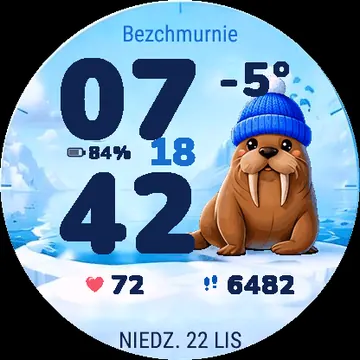
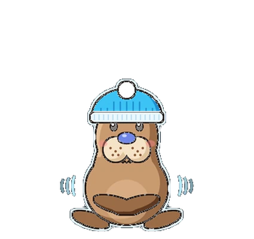
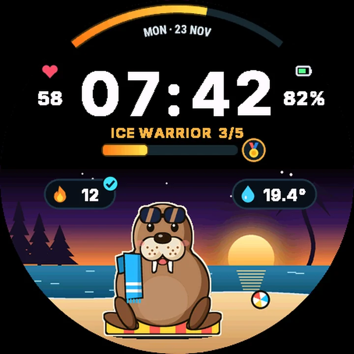
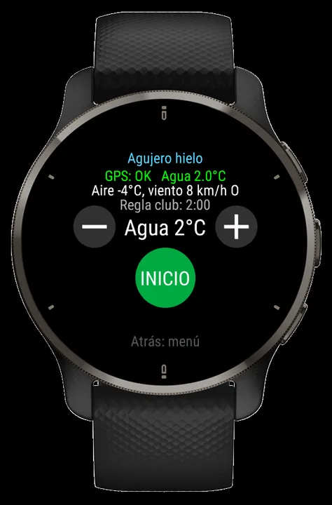
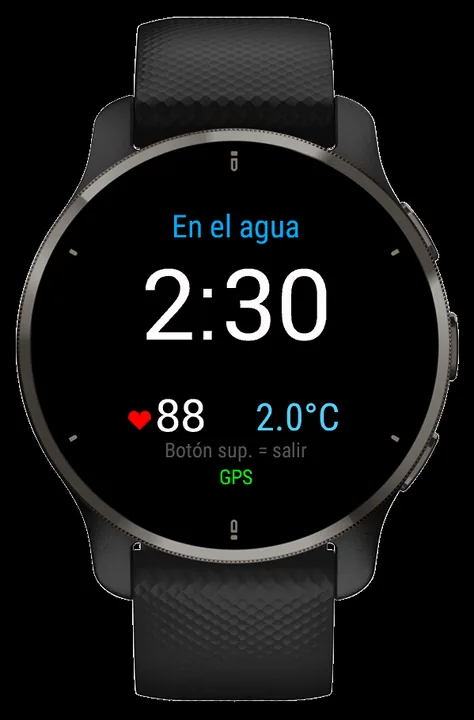
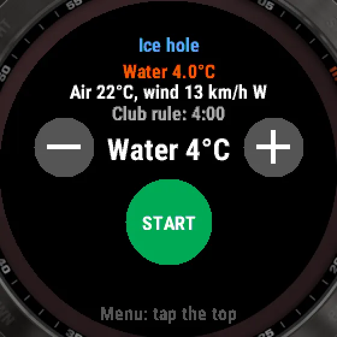
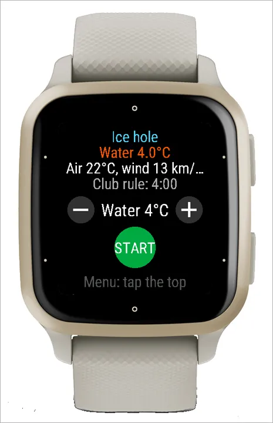
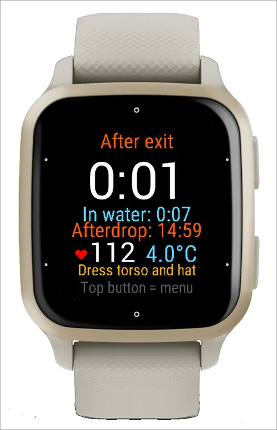

Mors – tarcza
Esfera animada de morsa para baños de hielo
3,99 USD 24 horas de prueba gratis
Próximamente en Connect IQ Store Consíguela en Connect IQ Ver más
En el reloj, la app se llama Baño frío.
Baños de agua fría y natación invernal registrados como deben — no como una natación.
O busca “Cold Dip” en la app Connect IQ del teléfono.


Esferas
Dos esferas con morsa para el baño en agua fría. Mors – tarcza cambia con el tiempo. Mors Level sube de nivel con tus minutos de temporada.

Esfera animada de morsa para baños de hielo
3,99 USD 24 horas de prueba gratis
Próximamente en Connect IQ Store Consíguela en Connect IQ Ver más

Esfera gamificada de morsa para baños de hielo
2,99 USD 7 días de prueba gratis
Próximamente en Connect IQ Store Consíguela en Connect IQ Ver más
Esfera animada de morsa para baños de hielo
La morsa reacciona al tiempo: olas con buen tiempo, gorro con helada, se sacude la nieve y salta al agujero en el hielo cuando toca el baño frío. Hora, fecha, temperatura del aire, tiempo, frecuencia cardíaca, pasos y batería. La animación se reproduce al despertar el reloj — nunca en el modo siempre encendido.
3,99 USD pago único, más IVA donde corresponda
Animación a todo color en relojes AMOLED como Venu 2, 2 Plus, 3 y 4, vívoactive 5 y 6, Forerunner 165, 170, 265, 570, 965 y 970, Fenix 8 y 9 (AMOLED), Epix 2, Descent Mk3, D2 Mach, Approach S70 y S72, Instinct 3 AMOLED y MARQ 2 y 3.
Esta esfera no está disponible en relojes MIP ni en modelos con menos memoria, como Fenix 5 Plus, Fenix 6 y 7, Fenix Solar, Forerunner 245, 255, 745, 945 y 955, Enduro, Descent Mk2, vívoactive 4, Venu 1 y MARQ de primera generación. Esas pantallas no pueden mostrar la animación a todo color.
Esfera gamificada de morsa para baños de hielo
Tu morsa sube de nivel a lo largo de 5 etapas a medida que crecen tus minutos de agua fría de la temporada, en vivo desde la app gratuita Cold Dip. En invierno, un agujero humeante en el hielo; en verano, una playa; además, la racha del día, la temperatura del agua, la frecuencia cardiaca, la batería y una pantalla always-on limpia. La animación de despertar se reproduce al despertar el reloj — nunca en el modo siempre encendido.
2,99 USD pago único, más IVA donde corresponda · 7 días de prueba gratis
Para subir de nivel con minutos, racha y temperatura del agua en vivo, instala la app gratuita Cold Dip. Sin ella, esos campos muestran simplemente los datos del reloj.
NOVATO 1/5



5 niveles
1/5
0–29 min esta temporada
2/5
30–119 min esta temporada
3/5
120–299 min esta temporada
4/5
300–599 min esta temporada
5/5
600+ min esta temporada



Animación a todo color en 51 relojes AMOLED como Venu 2, 2 Plus, 3 y 4, vívoactive 5 y 6, Forerunner 165, 170, 265, 570, 965 y 970, Fenix 8 y 9 (AMOLED), Epix 2, Descent Mk3, D2 Mach, Approach S70 y S72, Instinct 3 AMOLED y MARQ 2 y 3. El modo siempre encendido usa muy pocos píxeles encendidos.
Una esfera clara y estática en 19 relojes MIP como Fenix 7, Fenix 8 Solar, Forerunner 255 y 955, y Enduro 3 y 4. En total, Mors Level es compatible con 70 relojes Garmin, en 11 idiomas.
Hecha para un baño frío, no para la piscina. Tú decides en todo momento.
El botón superior cambia de fase. El tiempo en el agua sigue contando — la app nunca te dice que salgas. Eso lo decides tú. Tu último tiempo es solo una referencia, no una marca que tengas que superar.
La frecuencia cardíaca se registra durante todo el baño. La temperatura del agua se introduce a mano y se guarda con la actividad.
Temperatura del aire, sensación térmica y viento, tomados del tiempo de Garmin en tu teléfono.
El lugar del baño se guarda y se muestra en un mapa en Garmin Connect.
Después de cada baño, una valoración rápida de cómo te sientes. También el pico y la recuperación de la frecuencia cardíaca, más Body Battery y el estrés antes de entrar.
Todo se guarda en Garmin Connect como una actividad propia, no como una natación.
Inglés, polaco, alemán, checo, eslovaco, finés, noruego, sueco, español, ruso y ucraniano. La app cambia automáticamente al idioma del reloj.
Forerunner, Fenix, Epix, Enduro, Venu, Vivoactive, Instinct 2 / 3 / E / Crossover y más. No es compatible con relojes muy antiguos, como el Forerunner 920XT (Connect IQ 1.x).
Busca tu modelo. La lista incluye los 133 relojes de Cold Dip.
Los relojes muy antiguos con Connect IQ 1.x, como el Forerunner 920XT, no se pueden admitir. Pro necesita un reloj más nuevo: busca tu modelo para comprobarlo.
Así se ve Cold Dip en distintas pantallas Garmin.









Las versiones recientes de Cold Dip.
133 relojes, incluidos Instinct 2, Instinct 2S, Instinct 2X, Instinct 3 Solar, Instinct E e Instinct Crossover, y un nuevo diseño en blanco y negro para pantallas MIP.
126 relojes, incluido el Forerunner 55.
105 relojes, incluidos diseños rectangulares para Venu X1 y Venu Sq 2.
Primera publicación.
“Działa idealnie” (Funciona de maravilla)
Más de 10 minutos a 5°C: temperatura del agua en el reloj y todos los datos guardados en Garmin Connect.
Algunas cosas que la gente suele preguntar después de instalarla.
Instálala desde la app Connect IQ Store del teléfono, no desde Google Play ni el App Store. En el reloj encontrarás Cold Dip (Baño frío) en la lista de actividades / apps.
En el perfil «Agujero hielo» la ajustas con los botones − / + en la pantalla de inicio. En los demás perfiles, desde el menú: «Temp. agua manual». Si en el agua ves «--°C», la temperatura aún no se ha fijado.
Abre la actividad, entra en la pestaña «Estadísticas» y baja hasta la sección «Connect IQ». Ahí están la frecuencia cardíaca, la temperatura del agua, el tiempo, cómo te sentiste y los tiempos de cada fase. Las tarjetas de la pantalla «Resumen» las pone Garmin; la app no puede cambiarlas.
No. El reloj no puede medir la temperatura corporal. El sensor lee la temperatura del propio reloj, que depende de la piel y del aire. En Cold Dip la temperatura del agua se introduce a mano.
Las calorías las estima el reloj a partir de la frecuencia cardíaca; no las calcula Cold Dip.
El agua fría es cosa seria. Estos son recordatorios generales de seguridad, no consejo médico. Tú decides cuándo entrar y cuándo salir.
Ve siempre con alguien que pueda ayudar si ocurre algo, o asegúrate de que alguien en la orilla te está vigilando.
Si eres nuevo en el agua fría, acostúmbrate poco a poco en lugar de empezar con un baño largo en agua muy fría.
Mucha gente empieza con poco tiempo en el agua y lo aumenta despacio. No hay un tiempo que “debas” aguantar.
Sal del agua en cuanto sientas que debes hacerlo: temblores fuertes, dolor, entumecimiento, confusión, o simplemente la sensación de que ya es suficiente. Cold Dip nunca te dice que salgas ni fija un tiempo que superar. Tu último tiempo es solo una referencia.
Sécate y abrígate lo antes posible al salir del agua. Ten la ropa de abrigo lista antes de entrar.
Al salir, la temperatura corporal central puede seguir bajando un rato mientras la sangre más fría vuelve de la piel y las extremidades. A esto se le suele llamar afterdrop. Sigue abrigándote, tómate tu tiempo y espera a encontrarte bien antes de conducir o montar en bici.
Cold Dip es una app de registro, no un producto sanitario, y no ofrece consejo médico. No puede decirte si es seguro para ti entrar en agua fría. Si tienes una condición de salud, estás embarazada o no estás seguro, habla primero con un profesional cualificado.
Una mirada breve a un baño, desde la pantalla de inicio hasta el guardado en Garmin Connect.
¿Tienes una idea para una app o una esfera Garmin? Hagámoslo juntos. Escríbeme y dime qué reloj usas.
Si ya usas Cold Dip, una reseña en Connect IQ ayuda mucho. ¡Gracias!
Cold Dip es gratuita. Si te ayuda en tus baños, puedes apoyar el trabajo que hay detrás.
Invítame a un café